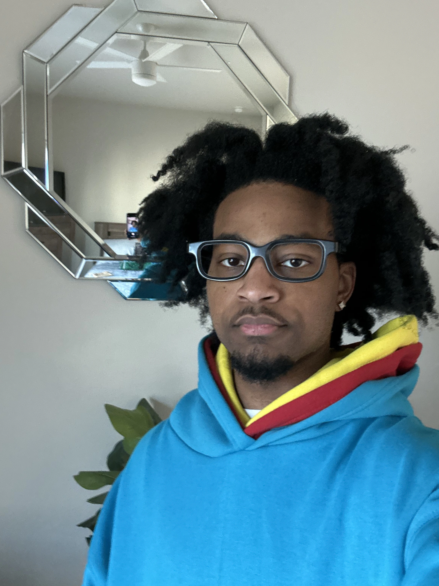

Who I Am
I am a content creator and video editor passionate about telling compelling stories through digital media. My work focuses on combining creative visuals with strategic thinking to produce content that captures attention and connects with audiences in meaningful ways.
As a student at Texas Tech University studying Media & Communication, I have developed a strong foundation in video production, editing, branding, and content strategy. Through academic projects and personal work, I have gained experience creating both short-form and long-form content designed for social media platforms and digital audiences.
What sets me apart is my ability to balance creativity with purpose. I approach every project with the goal of delivering content that not only looks professional but also communicates a clear message and drives engagement. I am constantly improving my skills and exploring new techniques to stay current in a fast-evolving digital landscape.
Skills & Tools
Creative Skills
- Video Editing
- Filming
- Content Strategy
- Storytelling
- Brand Development
Tools & Software
- Adobe Premiere Pro
- After Effects
- Photoshop
- CapCut
- Imovie
- Switcher Studios
Education & Experience
Texas Tech University — Bachelor’s in Media & Communication
Experience creating content for social media platforms, academic projects, and personal brand development. Skilled in producing engaging video content, editing workflows, and visual storytelling techniques.
My Approach
I believe great content exists at the intersection of creativity and putting in the work. Every project I work on is driven by intention and passion whether it is telling a story, building a brand, or engaging an audience. My goal is to create high quality, meaningful content that leaves a lasting impression and keeps supporters coming back.